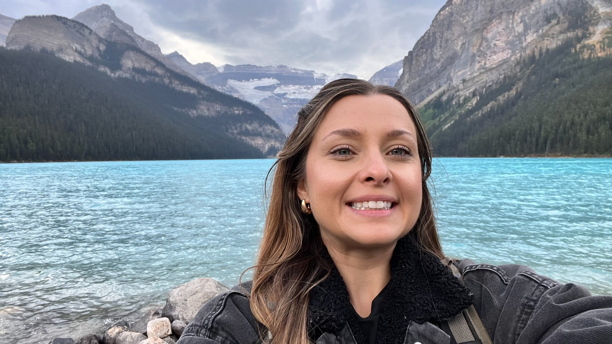

Every therapist has a story.
Wonder shaped the way I see healing.
I grew up among the rolling hills and evergreen forests of rural Virginia, where a Christmas tree farm was both my home and my playground. I spent countless hours roaming beneath the trees, discovering that wonder often lives in the quietest places.
Years later, I came to realize those forests taught me one of the deepest truths I know today: healing begins where we feel safe enough to slow down, explore with curiosity, and simply be.
As a child, I also carried anxiety that I did not yet have the language—or the support—to understand. Like many children, I adapted in the ways I knew how. Those experiences quietly planted the seeds of the therapist I would one day become.
Today, I hope to offer others what I was searching for then: a steady, compassionate presence where children, adolescents, adults, and families can feel safe enough to explore, understood enough to grow, and supported enough to reconnect with the wisdom and resilience that have been within them all along.

Grounded in training. Guided by relationship.
I earned my Master’s degree in Clinical Mental Health Counseling from Arizona State University in 2020, but my education did not end there. I believe the best therapists remain lifelong learners, continually seeking deeper understanding and more effective ways to support healing.
Since then, I have pursued advanced training in trauma, attachment, play therapy, and the neuroscience of healing. I am an EMDRIA Approved Consultant and an EMDR Certified Therapist, and I am currently working toward becoming a Registered Play Therapist™.
My work is thoughtfully integrated, drawing from Eye Movement Desensitization and Reprocessing (EMDR), Internal Family Systems (IFS)-informed therapy, Acceptance and Commitment Therapy (ACT), Theraplay®, TraumaPlay™, polyvagal-informed care, and interpersonal neurobiology.
While the tools may vary, the heart of the work remains the same: creating enough safety for healing to unfold.
Thoughtful care, shaped around the person in front of me.
No two people experience the world in exactly the same way. That is why I do not believe in a one-size-fits-all approach to therapy.
Whether we are helping a child express themselves through play, supporting parents as they strengthen connection, or working with adolescents and adults through trauma, anxiety, grief, or life transitions, therapy is tailored to your story, developmental needs, and goals.
Together, we approach your experiences with curiosity rather than criticism—honoring the strengths that carried you here while gently creating space for healing, growth, and lasting change.
Life beyond the office keeps me grounded.
Outside the therapy room, I'm happiest exploring the wild outdoors, often spending time convincing myself that “this will be a quick hike.” (It rarely is.)

I believe the things we practice in therapy should show up in real life, too.
- Slowing down
- Staying curious
- Taking care of ourselves
- Investing in the people who matter
These aren't just topics I talk about during sessions—they're values I try to live by, even if I don't always get it perfectly right.
I hope you'll find my office to be a place where you can show up exactly as you are—where you're met with warmth, honesty, and maybe a little humor along the way.
Let’s begin with connection.
In-person counseling is available in Scottsdale, with telehealth offered across Arizona.
If Headway shows no openings, email me. I may still have availability.